Casa, în cifre
Nimic din tabelul de mai jos nu e rotunjit în favoarea noastră. Dacă o cifră vă lipsește, sunați și v-o spunem la telefon, nu vă trimitem un formular.
- Preț
- 200.000 €
- plus TVA
- Dormitoare
- 3
- toate cu balcon sau ieșire la balcon
- Băi
- 2
- marmură neagră, obiecte sanitare montate
- Living
- 1
- open space, cu scară interioară
- Bucătărie
- 1
- separată
- Regim
- P+1
- parter și etaj
- Încălzire
- pardoseală
- plus calorifere la etaj
- Predare
- la cheie
- nemobilată
Camerele, una câte una
Fotografiile mobilate sunt staging virtual. Mobila nu există în casă și nu intră în preț. Apăsați pe buton la orice cameră și vedeți exact ce primiți.
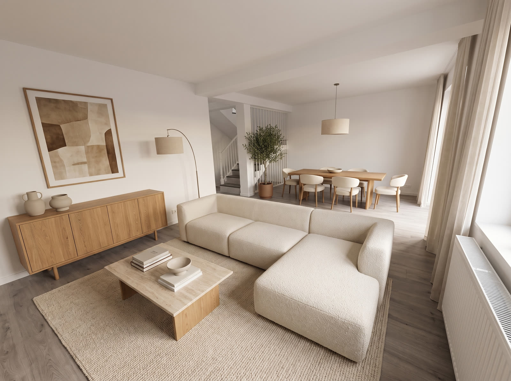
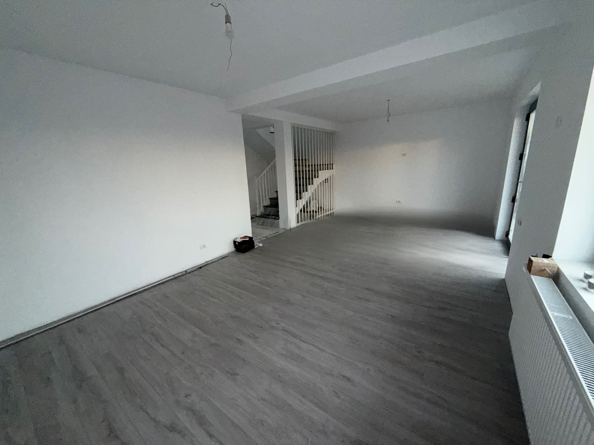
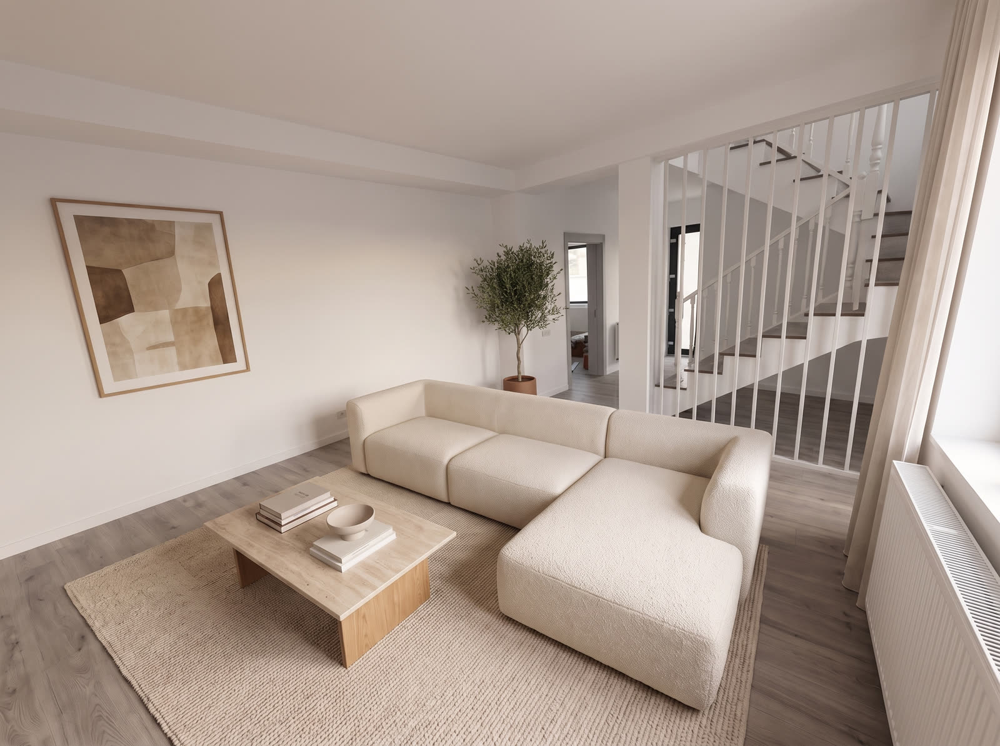
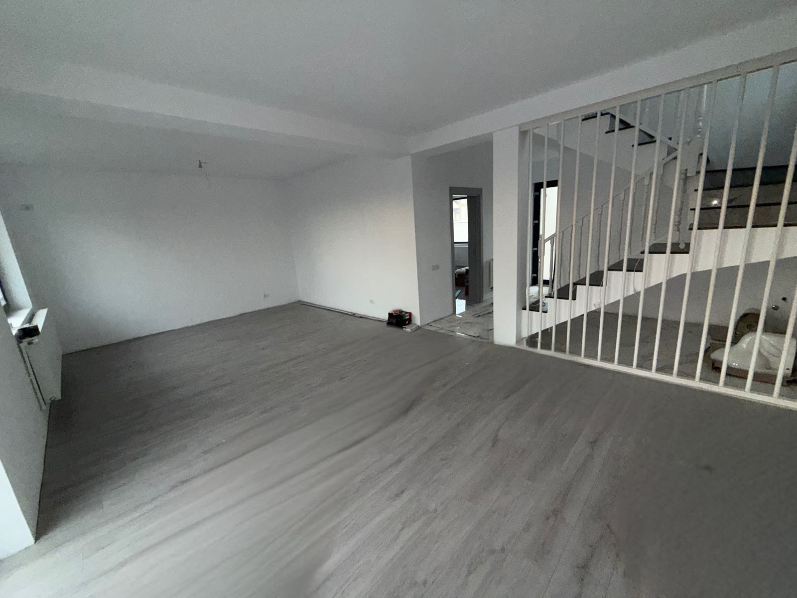
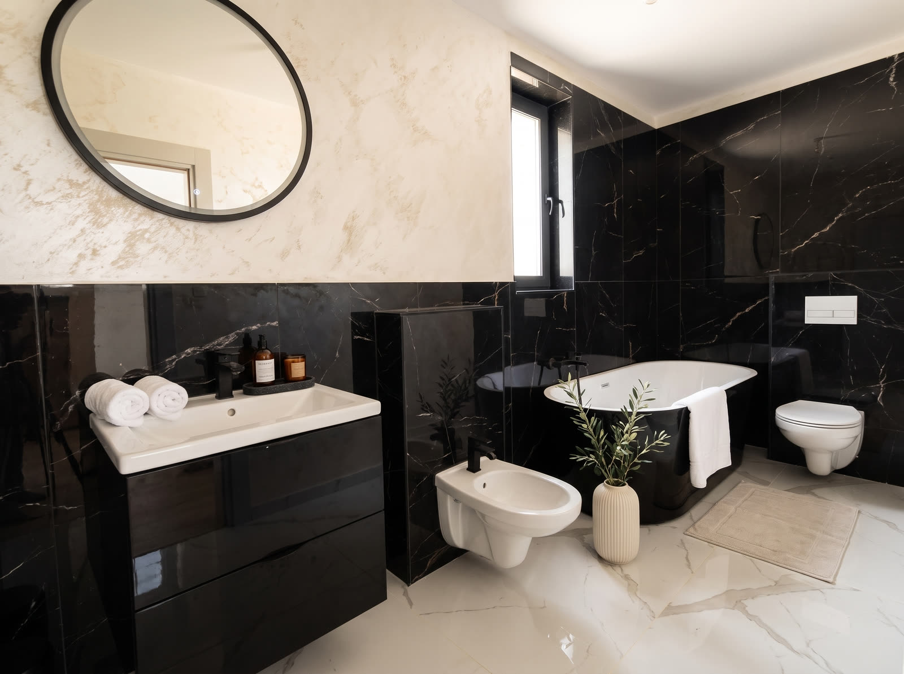
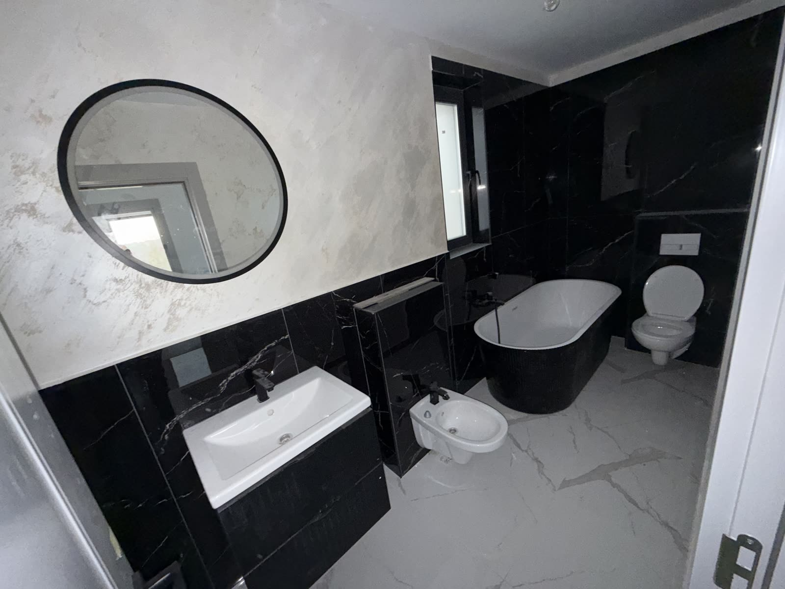
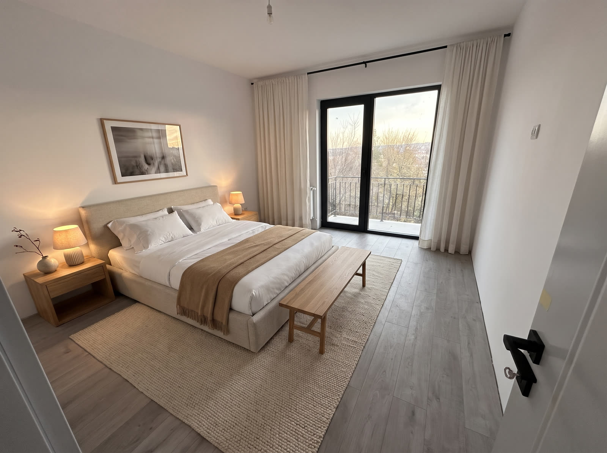
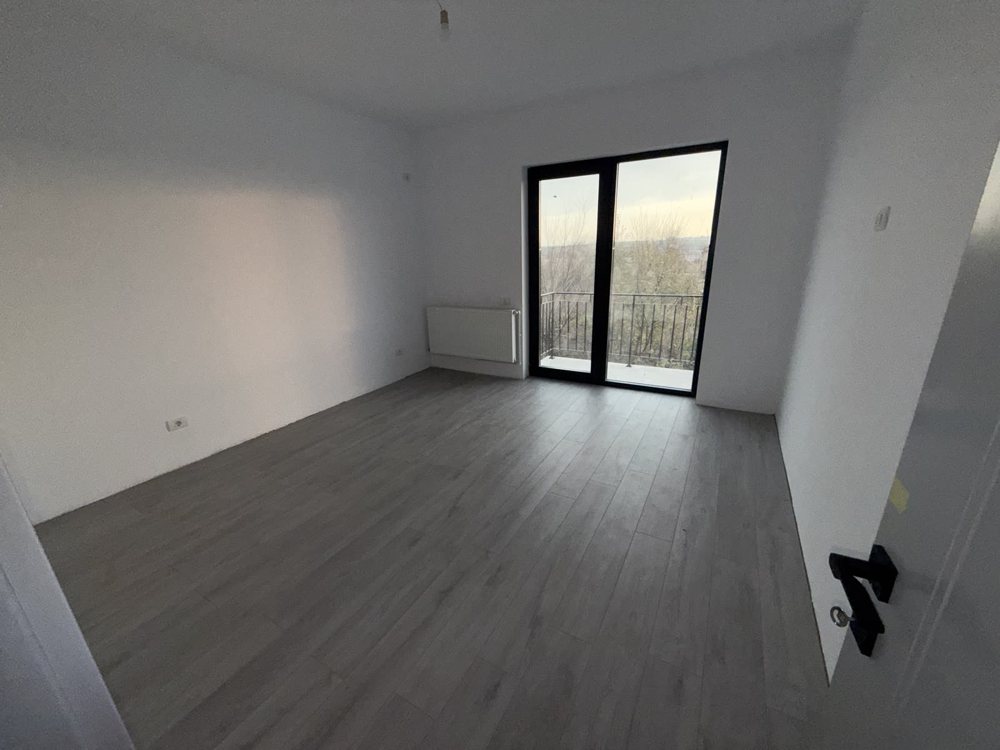
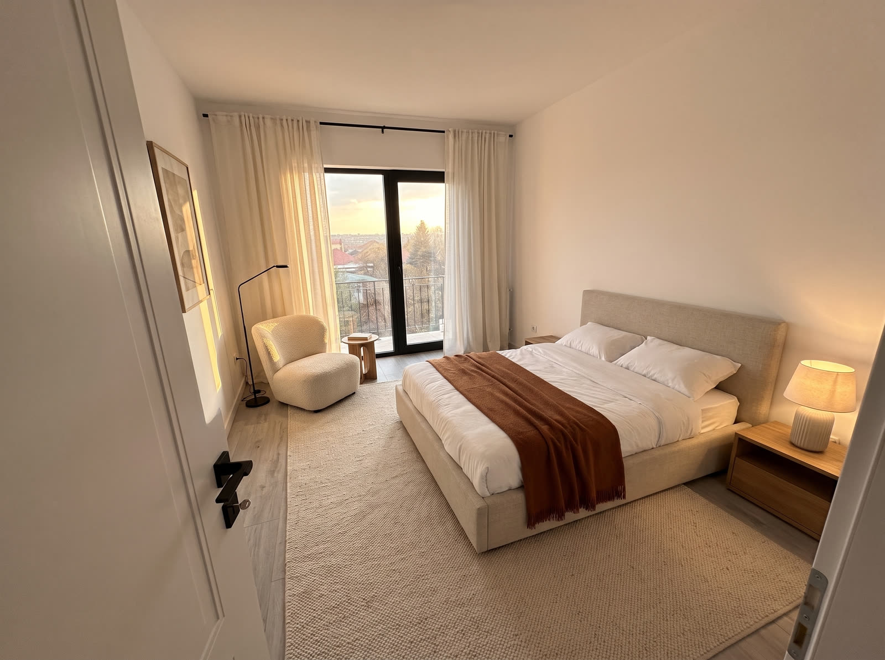
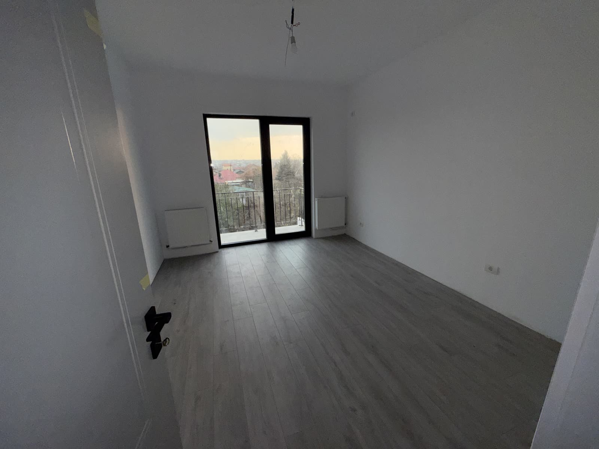
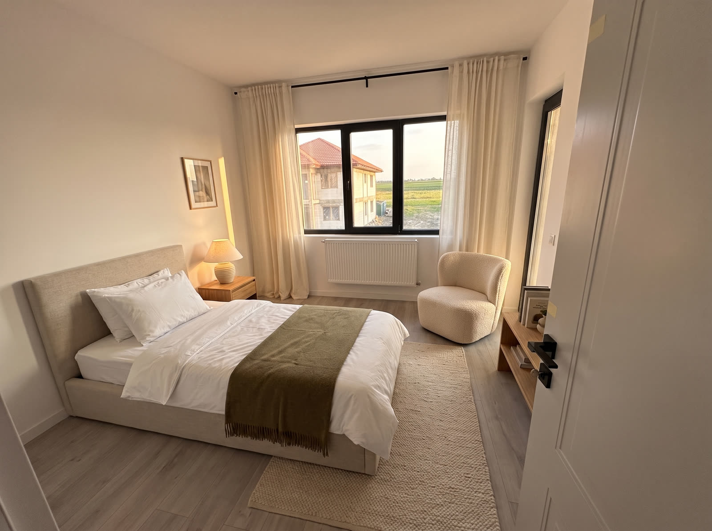
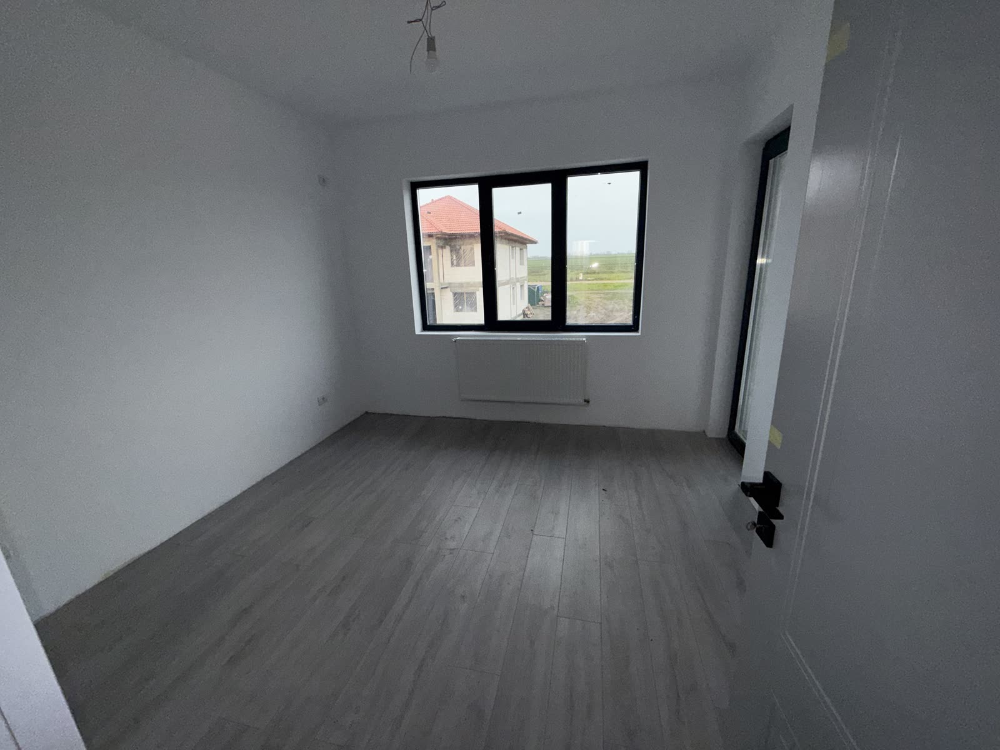
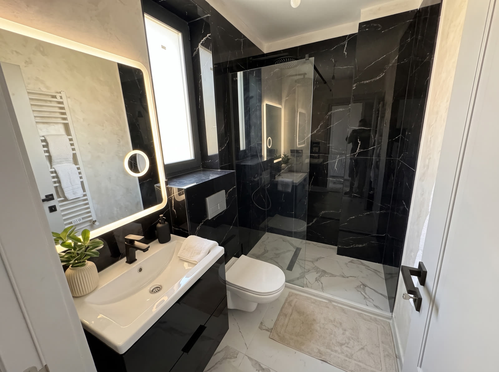
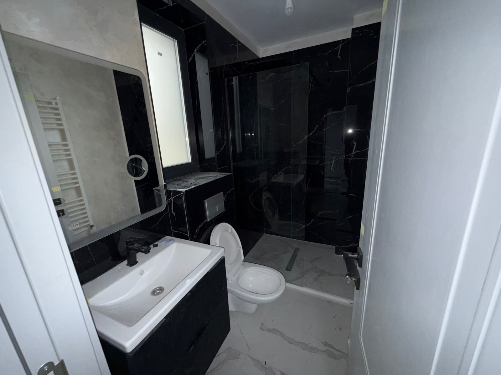
Așa se predă
Trageți de mâner. Stânga este fotografia reală a casei, dreapta este aceeași fotografie cu mobilă pusă digital. Diferența dintre ele este exact ce nu plătiți și exact ce va trebui să cumpărați.
Ce intră în cei 200.000 €
„La cheie" înseamnă altceva la fiecare dezvoltator. La noi înseamnă lista din stânga. Lista din dreapta e la fel de importantă, și de obicei nu v-o arată nimeni.
Intră în preț
- Structura și finisajele complete, interior
- Parchet laminat montat în toate camerele
- Gresie și faianță montate, marmură neagră în ambele băi
- Obiecte sanitare montate: cadă, duș, lavoare, vase, bideu, baterii
- Tâmplărie din aluminiu negru, geam termopan
- Uși interioare montate
- Încălzire în pardoseală
- Balcoane cu balustradă montată
- Scară interioară finisată, cu balustradă
- Utilități trase la casă
Nu intră în preț
- TVA, care se adaugă la cei 200.000 €
- Mobila, toată. Inclusiv tot ce vedeți în walkthrough și în galerie
- Electrocasnicele și mobilierul de bucătărie
- Corpurile de iluminat decorative
- Perdelele, covoarele și decorațiunile din imagini
Dacă vă întrebați de ce scriem asta atât de apăsat: pentru că un cumpărător care descoperă singur, la semnare, că mobila nu intră în preț, nu mai semnează.
Finisajele, pe materiale
Fără „premium" și fără „de lux". Mai jos scrie ce s-a pus efectiv în casă, și puteți verifica fiecare rând în fotografiile de mai sus, în varianta lor reală.
- Băi
- Marmură neagră cu vinișoare albe pe pereți, marmură albă pe pardoseală, microciment bej pe peretele de deasupra lavoarului din baia mare
- Pardoseli
- Parchet laminat, nuanță stejar gri, în living și în toate dormitoarele
- Tâmplărie
- Aluminiu negru, uși de balcon pe toată înălțimea în două dormitoare
- Instalații
- Încălzire în pardoseală, calorifere de perete la etaj, obiecte sanitare montate
- Interior
- Pereți albi gata de vopsit sau tapetat, uși interioare montate, scară cu balustradă
Baia principală. Cada, bideul și vasul suspendat sunt montate și intră în preț. Prosoapele și vaza nu.
Unde e casa
Valu lui Traian, județul Constanța. La marginea orașului, într-o zonă care încă se construiește.
Nu vă vindem o poveste cu liniște desăvârșită. Din dormitorul trei se vede o casă în construcție și un câmp, iar noi am lăsat fotografia exact așa. În câțiva ani acolo va fi o stradă întreagă de case noi, ceea ce pentru cineva e un minus, iar pentru cineva care cumpără acum e chiar argumentul.
Dacă vreți coordonatele exacte și un tur pe teren, sunați. Venim cu voi la fața locului, nu vă trimitem o locație pe hartă și un mesaj că revenim.
Un telefon, nu un formular
Răspundem noi, cei care am construit casa. Puteți întreba orice, inclusiv ce nu scrie pe pagina asta.
0725 367 954 razvanalpetri@yahoo.ro